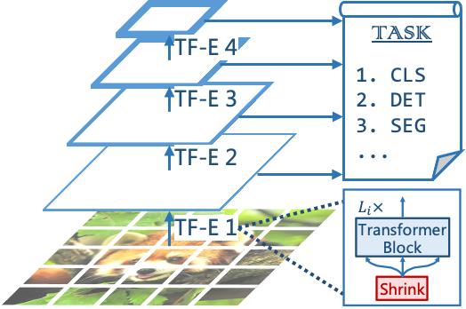
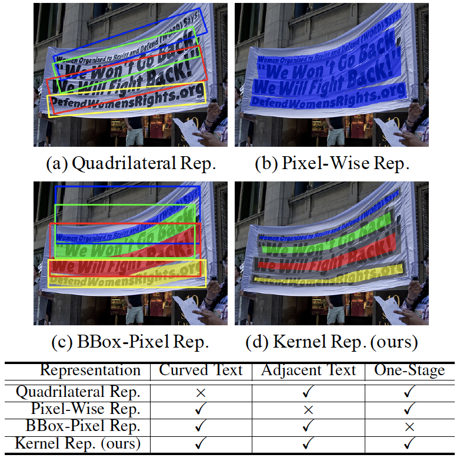
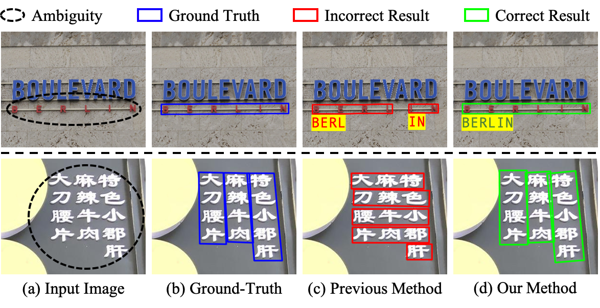
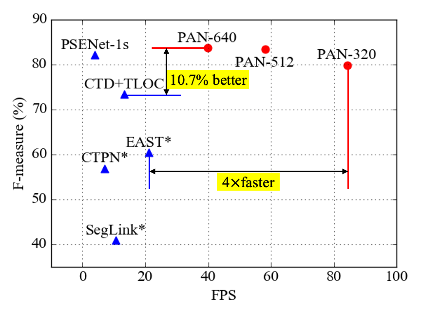
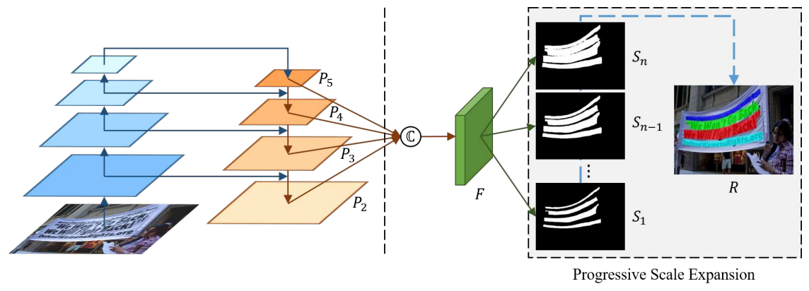
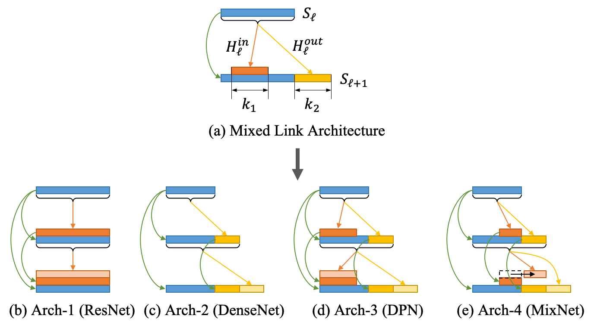
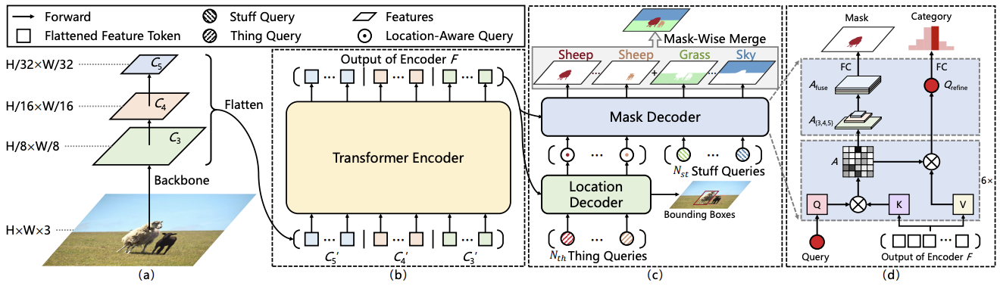
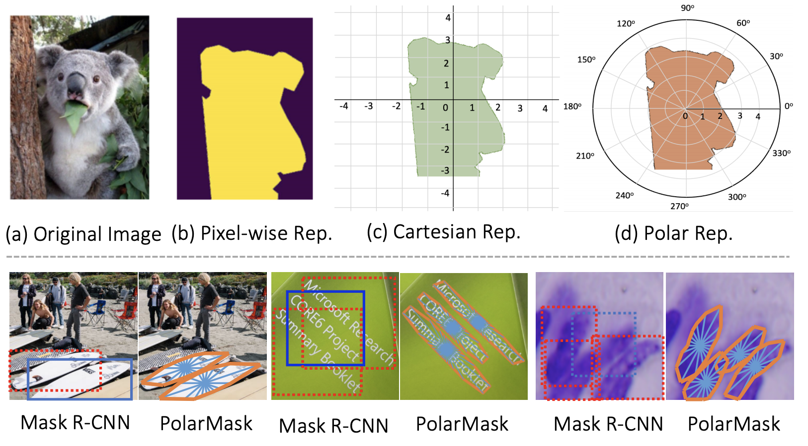
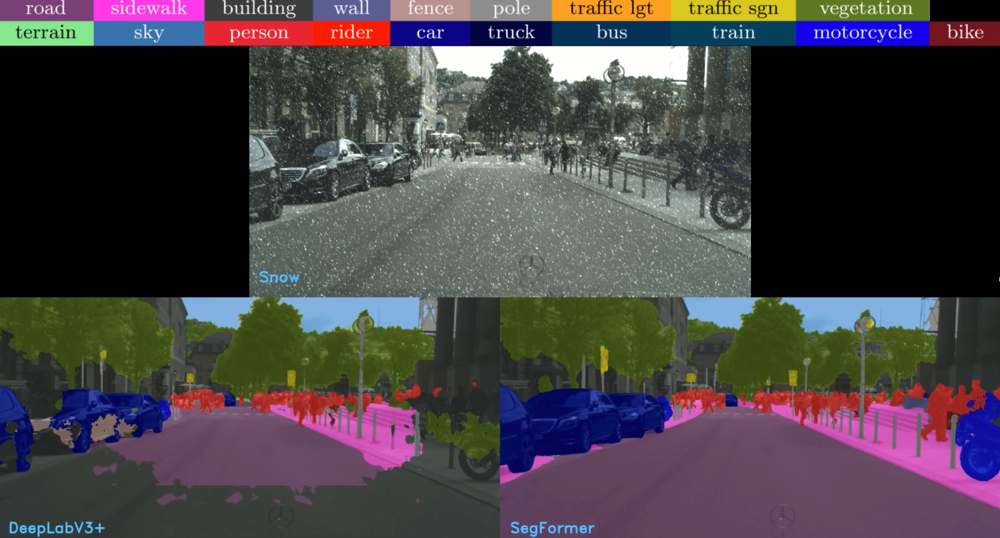
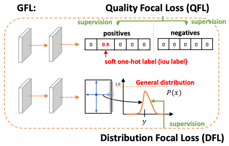

Selected Publications ([Full List])
(* indicates equal contribution, # corresponding author)
Pyramid Vision Transformer: A Versatile Backbone for Dense Prediction without Convolutions
Wenhai Wang, Enze Xie, Xiang Li, Deng-Ping Fan#, Kaitao Song, Ding Liang, Tong Lu#, Ping Luo, Ling Shao
in ICCV, 2021 (oral presentation)
[Paper] [Code] [中文解读]
[Report]
[Talk]
[BibTex]
[中文解读]
[Report]
[Talk]
[BibTex]
[ICCV21' Top-10 Influential Papers]
A pure Transformer backbone for dense prediction, such as object detection and semantic segmentation.
Wenhai Wang, Enze Xie, Xiang Li, Deng-Ping Fan#, Kaitao Song, Ding Liang, Tong Lu#, Ping Luo, Ling Shao
in ICCV, 2021 (oral presentation)
[Paper] [Code]
[中文解读]
[Report]
[Talk]
[BibTex][ICCV21' Top-10 Influential Papers]



AE TextSpotter: Learning Visual and Linguistic Representation for Ambiguous Text
Spotting
Wenhai Wang, Xuebo Liu, Xiaozhong Ji, Enze Xie, Ding Liang, Zhibo Yang, Tong Lu#, Chunhua Shen, Ping Luo
in ECCV, 2020
[Paper] [Dataset] [Code] [BibTex]
[BibTex]
We introduce linguistic information to eliminate the ambiguity in text detection.
Wenhai Wang, Xuebo Liu, Xiaozhong Ji, Enze Xie, Ding Liang, Zhibo Yang, Tong Lu#, Chunhua Shen, Ping Luo
in ECCV, 2020
[Paper] [Dataset] [Code]
[BibTex]


Shape Robust Text Detection with Progressive Scale Expansion Network
Wenhai Wang*, Enze Xie*, Xiang Li, Wenbo Hou, Tong Lu#, Gang Yu, Shuai Shao
in CVPR, 2019
[Paper] [Poster] [Code] [BibTex]
[BibTex]
We proposed a segmentation-based text detector that can precisely detect text instances with
arbitrary shapes.
Wenhai Wang*, Enze Xie*, Xiang Li, Wenbo Hou, Tong Lu#, Gang Yu, Shuai Shao
in CVPR, 2019
[Paper] [Poster] [Code]
[BibTex]






PolarMask++: Enhanced Polar Representation for Single-Shot Instance Segmentation and Beyond
Enze Xie*, Wenhai Wang*, Mingyu Ding, Ruimao Zhang, Ping Luo#
TPAMI, 2021
[Paper] [Code] [BibTex]
[BibTex]
[CVPR20' Top-10 Influential Papers]
We extend PolarMask(CVPR'20) to several instance-level detection tasks.
Enze Xie*, Wenhai Wang*, Mingyu Ding, Ruimao Zhang, Ping Luo#
TPAMI, 2021
[Paper] [Code]
[BibTex][CVPR20' Top-10 Influential Papers]

SegFormer: Simple and Efficient Design for Semantic Segmentation with Transformers
Enze Xie, Wenhai Wang, Zhiding Yu#, Anima Anandkuma, Jose M. Alvarez, Ping Luo#
NeurIPS, 2021
[Paper] [Code] [中文解读]
[Demo]
[BibTex]
[中文解读]
[Demo]
[BibTex]
[NeurIPS21' Top-10 Influential Papers]
A simple and effective Transformer-based semantic segmentation framework.
Enze Xie, Wenhai Wang, Zhiding Yu#, Anima Anandkuma, Jose M. Alvarez, Ping Luo#
NeurIPS, 2021
[Paper] [Code]
[中文解读]
[Demo]
[BibTex][NeurIPS21' Top-10 Influential Papers]

Generalized Focal Loss: Learning Qualified and Distributed Bounding Boxes for Dense Object
Detection
Xiang Li, Wenhai Wang, Lijun Wu, Shuo Chen, Xiaolin Hu, Jun Li, Jinhui Tang, Jian Yang#
in NeurIPS, 2020
[Paper] [Code] [BibTex]
[BibTex]
We propose the generalized focal loss for learning the improved representations of dense object
detector.
Xiang Li, Wenhai Wang, Lijun Wu, Shuo Chen, Xiaolin Hu, Jun Li, Jinhui Tang, Jian Yang#
in NeurIPS, 2020
[Paper] [Code]
[BibTex]